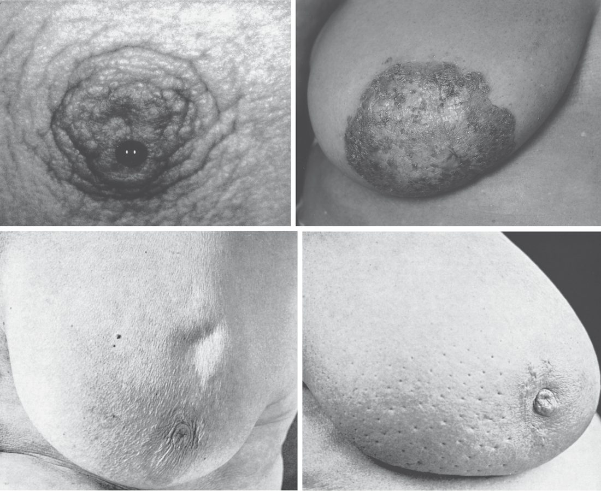
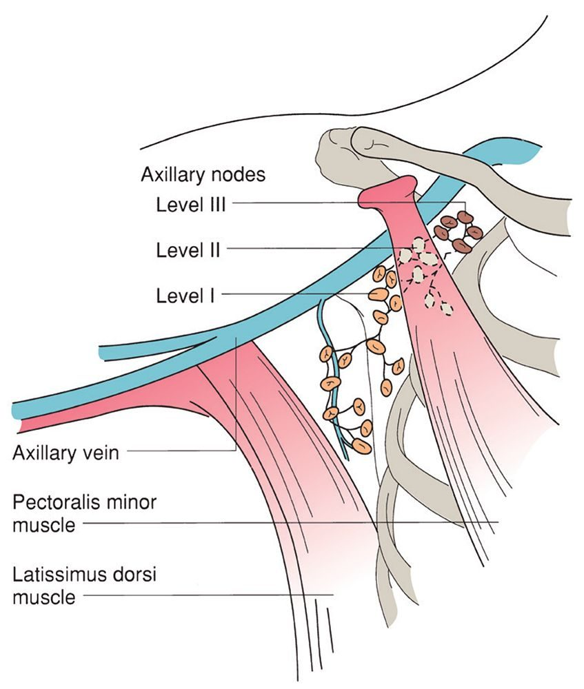
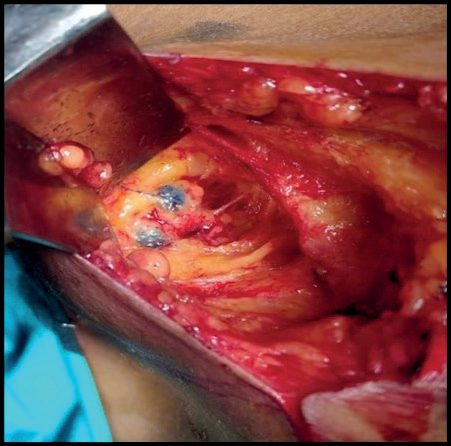
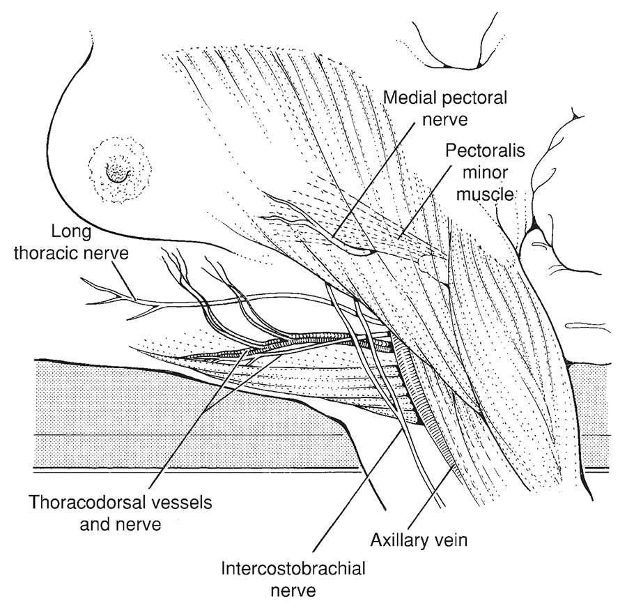

Breast Cancer
Summary
- Breast cancer is the most frequent cancer among women worldwide, with an estimated 2.3 million new cases diagnosed in 2020, and it is the second leading cause of cancer death in females in the United States [1][2].
- It arises predominantly from the ductal epithelium (about 90% of cases) and less commonly from the lobule, progressing from in-situ to invasive disease once tumour cells breach the ductal/lobular basement membrane [1].
- Diagnosis relies on triple assessment (clinical examination, imaging, and tissue sampling), and treatment is multimodal, combining surgery, radiotherapy and systemic therapy tailored to tumour stage and biology [1][2].
- Five-year survival has improved steadily, from 63% in the early 1960s to 91% during 2012–2018 in the United States, reflecting earlier detection and improved therapy [2].
- Breast cancer is the most heavily guideline-governed topic in general surgery in the UK, and four separate NICE documents divide the territory between them: NG12 sets the referral thresholds from primary care, NG101 covers early and locally advanced disease, CG81 covers advanced disease, and CG164 covers familial risk and risk-reducing strategies [3][4][5][6].
- Population screening sits outside NICE altogether, under the NHS Breast Screening Programme [7].
- Where these documents differ from the textbook account, and they do, on preoperative MRI, on margin width, on radiotherapy fractionation, and on who may safely omit radiotherapy, the divergence is set out in the relevant section below.
Definition
Breast carcinoma arises from the milk ducts in 90% (ductal carcinoma) or from the lobule in 10% (lobular carcinoma) of patients; disease confined to the epithelium without breach of the basement membrane is termed in-situ disease, while infiltration through a breach in the basement membrane produces invasive (infiltrating) ductal or lobular carcinoma [1].
Pathophysiology
- Invasive breast cancers lack organised glandular architecture, infiltrating haphazardly into stroma; pathologists broadly divide invasive breast cancer into ductal and lobular histologic types, with invasive ductal carcinoma tending to grow as a cohesive mass detectable on mammography and invasive lobular carcinoma permeating the breast in a single-file pattern that often escapes detection, characterised by CDH1 mutation causing loss of E-cadherin [1][2].
- If carcinoma cells migrate along the ducts to the nipple they produce the skin changes known as Paget's disease [8].
- Ductal carcinoma in situ may present in a manner similar to invasive cancer, or be asymptomatic and detected through the screening programme as microcalcification on mammography [8].
Clinical features
- A discrete, painless lump is the most common presentation, most frequently in the upper outer quadrant of the breast; other features include nipple retraction, nipple discharge (blood or serous), skin ulceration, peau d'orange, satellite nodules, and skin dimpling or tethering [1].
- Half of all breast cancers occur in the upper outer quadrant including the axillary tail, so the entire breast must be examined; classically the patient notices a painless lump, most tumours are not tender, and only the very rare inflammatory type feels warm [8].
- Multiple tumours in the same breast are seen in 10% of cases [8].
- Peau d'orange results from obstruction of cutaneous lymphatic drainage by tumour, producing oedema of the skin between the pits that mark the openings of hair follicles and sweat glands [8].

Examination technique
- Breast examination is a sensitive examination and must always be performed gently, with full permission and explanation and in the presence of a chaperone; the woman undresses to the waist and wears a front-opening gown [8].
- The examination starts with the patient seated and facing the clinician.
- Inspection looks for asymmetry, indentation and tethering, accentuated by asking the patient to lift her hands above her head and to contract the pectoral muscles.
- The patient then rests on the couch with the upper body raised at 45°, and where a lump is only felt in a particular position she should also be examined in that position [8].
- Palpation uses the flat of the fingers, pressing tissue against the chest wall in all areas including behind the nipple, examining the normal breast first [8].
- The axilla is examined with the patient's arm lifted to 45° and supported along the examiner's ipsilateral forearm, which relaxes the anterior and posterior axillary folds; the infraclavicular and supraclavicular fossae are palpated last [8].
- Axillary lymphadenopathy is present in 10% of women with breast cancer, though palpable nodes are not necessarily pathological (especially when bilateral) and impalpable nodes are quite commonly found on investigation to contain tumour [8].
- Palpable nodes containing metastases are usually firm and discrete, matting together as they enlarge [8].
Tethering versus fixation
- These two terms are frequently confused and the distinction is examinable.
- A lump that is fixed to the skin has spread into the skin and cannot be moved or separated from it.
- A tethered lesion is more deeply situated and distorts the fibrous septa (Cooper's ligaments) that separate the lobules; this puckers the skin, but the lesion remains separate from it and can be moved independently.
- Practically, most lumps can be moved anywhere within an arc without moving the skin; if pulling the lump outside that arc indents the skin it is tethered, and if the lump cannot be moved at all without moving the skin it is fixed [8].
- Fixation of a lump to the skin is almost diagnostic of carcinoma, the only other conditions producing it are traumatic fat necrosis and a pointing abscess, which should be obvious [8].
- For deep structures the distinction is less obvious because the underlying muscles are invisible when relaxed: ask the patient to press her hand against her hip to tense the pectoral muscles, and if the lesion becomes less mobile it is fixed or tethered to them [8].
Distinguishing a lump by its clinical features
| Type of lump | Age (years) | Pain | Surface | Consistency | Axilla |
|---|---|---|---|---|---|
| Fibroadenoma | 15–35 | No | Smooth and bosselated | Rubbery | Normal |
| Benign nodularity | 20–55 | Often | Indistinct | Mixed | Normal |
| Solitary cyst | 40–55 | Occasional | Smooth | Soft to hard | Normal |
| Carcinoma | 35+ | Uncommon | Irregular | Hard | Nodes may be palpable |
Table reformats the comparison of four common breast lumps [8]. Two caveats attach to the carcinoma row: the surface of a carcinoma is usually indistinct, which makes its shape hard to define except when small, and a few cancers (especially the triple-negative type) feel smooth and mimic cysts and fibroadenomas, while some lobular tumours are soft thickenings, so consistency should not be over-interpreted [8].
Paget's disease versus eczema of the nipple
| Feature | Eczema | Paget's disease |
|---|---|---|
| Laterality | Unilateral or bilateral | Unilateral |
| Age | Any age | Older females |
| Itch | Itches | Does not itch |
| Vesicles | Present | Absent |
| Nipple | Intact | May be destroyed in later stages |
| Underlying lump | No lumps | May be an underlying lump |
| Distribution | May affect just the areola | Always arises from the nipple, may spread into the areola |
Table reformats the differences between eczema and Paget's disease of the nipple [8].
Advanced and metastatic presentation
- Fewer than 5% of patients present with locally advanced disease and fewer than 5% with metastatic disease [8].
- A neglected tumour will invade and consume the whole breast, leaving a large malignant ulcer on the chest wall, and such advanced lesions are still seen [8].
- Extensive (but not always palpable) involvement of the axillary nodes may cause lymphoedema of the arm or venous thrombosis and oedema [8].
- A full general examination is essential, since metastases occur commonly in the skeleton (especially the lumbar spine, causing back pain, reduced spinal movement, pathological long-bone fracture, and even paraplegia from cord compression), the lungs (pleural effusions or nodules, with lymphangitis carcinomatosa causing severe dyspnoea), and the liver (hepatomegaly, jaundice, ascites) [8].
Etiology
- Age is probably the most important risk factor, with incidence increasing with age and a cumulative lifetime incidence of 12.9% [2].
- Breast carcinoma is extremely rare in teenagers and in the 20s, fewer than 5% of cases occur under the age of 40, peak incidence is in the 60s, and the condition remains common into old age [8].
- Female sex is a major risk factor, as males account for less than 1% of breast cancer cases [1][2].
- Carcinoma is more common in nulliparous women and less common with increasing numbers of children and with breastfeeding [8].
| Factor | Relative risk |
|---|---|
| BRCA1 gene carrier | 8.00 |
| Hormone replacement therapy use for more than 5 years | 2.00 |
| First-degree relative with breast cancer | 1.80 |
| Oral contraceptive pill use | 1.25 |
| Postmenopausal obesity | 1.25 |
| Alcohol, 2 units per day | 1.20 |
| Moderate exercise, 30 minutes per day | 0.82 |
Table reformats the relative risks for breast cancer [8]. Note that the exercise figure is a relative risk below 1, that is, protective.
Genetic predisposition
Approximately 5–8% of women with breast cancer carry highly penetrant, usually autosomal dominant gene mutations giving a lifetime risk of up to 80%: BRCA1, BRCA2, TP53 (Li-Fraumeni syndrome), PTEN, CDH1 (hereditary diffuse gastric cancer), STK11 (Peutz-Jeghers) and PALB2. A further 20% of cases have some genetic contribution from moderate-risk genes that raise risk only to a small or moderate degree [8].
Family history is stratified into three UK risk bands, and the band determines everything that follows, surveillance, chemoprevention eligibility, and access to genetic testing.
Moderate risk is a greater than 3% to 8% risk in the next 10 years for a woman aged 40, or a lifetime risk of 17% or greater but less than 30% [6]. High risk is a greater than 8% risk in the next 10 years, or a lifetime risk of 30% or greater, or a 10% or greater chance of a gene mutation being harboured in the family [6]. Very high risk (a lifetime risk of 40% or greater because of a specific genetic abnormality) is not managed under CG164 at all: surveillance for this group is run by the NHS Breast Screening Programme [6].
Genetic testing is offered in specialist genetic clinics at a combined BRCA1 and BRCA2 mutation carrier probability of 10% or more, whether the person has breast or ovarian cancer themselves, has an affected relative available to test, or has no affected relative available [6]. Testing should where possible start with an affected family member (mutation searching), and the search should aim for as close to 100% sensitivity as possible with the whole gene searched [6]. Fast-track genetic testing within 4 weeks of a breast cancer diagnosis should be offered only as part of a clinical trial [6].
- Family history-taking begins in primary care and must include second-degree relatives (aunts, uncles and grandparents) on the paternal as well as the maternal side [6].
- Referral decisions need accurate information on the age at diagnosis of any cancer in relatives, the site of tumours, multiple cancers including bilateral disease, and Jewish ancestry, since women with Jewish ancestry are around 5 to 10 times more likely to carry BRCA1 or BRCA2 mutations than women in non-Jewish populations [6].
- Further advice should be sought from a specialist genetics service where the family also contains triple-negative breast cancer under 40, Jewish ancestry, sarcoma in a relative younger than 45, glioma or childhood adrenocortical carcinoma, complicated patterns of multiple cancers at a young age, or a very strong paternal history of four relatives diagnosed under 60 [6].
NG101 adds one testing rule outside the family-history framework: offer genetic testing for BRCA1 and BRCA2 to women under 50 with triple-negative breast cancer, including those with no family history of breast or ovarian cancer [4].
Diagnosis
Patients presenting with a breast lump, nipple discharge, or other breast symptoms are assessed using "triple assessment", clinical history and examination, radiological imaging (ultrasonography and/or mammography), and tissue sampling (cytology or histology), an approach with a diagnostic accuracy approaching 100% [1]. Screening mammography is performed in asymptomatic women to detect occult cancer, with most US society guidelines recommending it start at age 40, and population-based mammographic screening achieves 90–95% long-term survival in screen-detected tumours [1][2].
- The Breast Imaging Reporting and Data System (BI-RADS), developed by the American College of Radiology, standardises the degree of suspicion of malignancy on mammography, ultrasound or MRI on a 0–6 scale, guiding the decision for biopsy [2].
- Ultrasonography is the primary imaging modality in young women with dense breast tissue, distinguishing cystic from solid lesions, while solid masses with irregular shape and ill-defined (indistinct, angular, or spiculated) margins are suspicious for malignancy and require biopsy [1].
- Core-needle biopsy is the method of choice for tissue diagnosis of breast lesions, performed under mammographic (stereotactic), ultrasound, or MRI guidance, and can be complemented by fine-needle aspiration of suspicious axillary lymph nodes, which has a reported sensitivity of approximately 90% [2].
MRI is used selectively, for identifying an unknown primary in patients with axillary metastases, assessing extent of disease in dense breasts, evaluating residual disease after lumpectomy with positive margins, or screening high-risk patients, although no high-level evidence shows that MRI-guided decision-making improves local recurrence or survival [2]. Contrast-enhanced CT of the chest, abdomen and pelvis and an isotope bone scan are used for metastatic work-up in locally advanced disease (T3, T4, N2, N3), whereas patients with early breast cancer (T1–T2, N0–N1) require metastatic evaluation only if symptomatic or with raised alkaline phosphatase; PET-CT may also be used [1].
Routinely reported biomarkers are oestrogen receptor (ER), progesterone receptor (PR), and HER2, assessed by immunohistochemistry (HER2 scored 0 to 3+, with equivocal 2+ results reflexed to in-situ hybridisation), along with the Ki-67 proliferation index [2]. Genomic assays such as the 21-gene Oncotype DX Recurrence Score, MammaPrint (70-gene), PAM50/Prosigna, and EndoPredict help predict benefit from chemotherapy in ER-positive, HER2-negative, node-negative or limited node-positive disease [1][2].
- Referral from primary care.
- Refer using a suspected cancer pathway referral for breast cancer in people aged 30 and over with an unexplained breast lump with or without pain, or aged 50 and over with any of discharge, retraction or other changes of concern in one nipple only [3]. Consider a suspected cancer pathway referral in people with skin changes that suggest breast cancer, or aged 30 and over with an unexplained lump in the axilla [3]. Consider non-urgent referral in people aged under 30 with an unexplained breast lump with or without pain [3].
- The age thresholds (30 for a lump, 50 for unilateral nipple change) are the two numbers to remember.
Triple assessment is scored, not merely performed. The UK multi-college best practice guidelines require the level of suspicion for malignancy to be recorded numerically at each of the three arms of triple assessment, on parallel 1-to-5 scales [9].
| Arm of triple assessment | Prefix | Scale |
|---|---|---|
| Clinical examination | P1–P5 | 1 normal, 2 benign, 3 uncertain, 4 suspicious, 5 malignant |
| Ultrasound | U1–U5 | 1 normal, 2 benign, 3 indeterminate/probably benign, 4 suspicious of malignancy, 5 highly suspicious of malignancy |
| Mammography | M1–M5 | as for ultrasound, using the RCR Breast Group classification |
| Needle core biopsy | B1–B5 | reported per Royal College of Pathologists tissue pathways and NHSBSP/RCPath non-operative diagnosis guidance |
| Fine needle aspiration cytology | C1–C5 | reported per the same guidance |
Table reformats the UK triple assessment scoring scales [9]. The associated quality markers set 95% targets for recording a P score, for recording U and M scores, and for recording B and C scores [9].
- Imaging is selected by age, not by preference.
- Ultrasound is the imaging method of choice for the majority of women aged under 40 and during pregnancy and lactation; X-ray mammography is used for women aged 40 and over with ultrasound added when indicated, and is not indicated for the majority of patients aged under 40 [9].
- Mammography should nonetheless be carried out in patients aged 35–39 with clinically suspicious or malignant findings (P4, P5), considered in clinically indeterminate lesions (P3) if ultrasound is normal, and performed in all patients with proven malignancy even if aged under 40 [9].
Needle core biopsy is preferred to FNAC for most solid lesions and for lesions suspicious for cancer, because of higher sensitivity and specificity and because histology yields tumour type, grade and receptor status; FNAC remains an acceptable alternative in units with appropriate expertise, and centres using cytology should demonstrate appropriate sensitivity and specificity [9]. Patients with ultrasound features categorised U3–U5 should undergo needle biopsy [9]. Ultrasound of the axilla should be carried out in all patients when malignancy is expected, with ultrasound-guided needle sampling of any node showing abnormal morphology; published studies show no significant difference in sensitivity or specificity between FNAC and core biopsy for node sampling [9].
- Process standards.
- All patients referred with breast symptoms should be seen within two weeks of referral, a national requirement set at 93% [9].
- All patients undergoing needle biopsy should be given a definite appointment or agreed arrangement for communication of the result within five working days, the results of triple assessment should be discussed at a multidisciplinary meeting for every patient who has a needle biopsy, and GPs should be informed of a cancer diagnosis within 24 hours and informed if the patient does not have cancer within 10 working days [9].
- Delayed diagnosis of cancer after triple assessment is approximately 0.2%, and the quality marker requires fewer than 1% of new symptomatic cancers per year to be diagnosed between 3 and 12 months after triple assessment [9].
A caveat on currency. These guidelines were published in November 2010 with a stated review date of November 2012 and have not been superseded by an equivalent multi-college document; the scoring scales and the age-based imaging rules remain in universal UK use, but the process targets should be read against current cancer waiting-time standards [9].
- Preoperative MRI: NICE restricts it where the textbooks list broad indications.
- NG101 says "Do not routinely use MRI of the breast as part of the preoperative assessment of people with biopsy-proven invasive breast cancer or ductal carcinoma in situ" [4].
- MRI is offered as part of preoperative assessment only in three defined situations: if the extent of disease is not clear from clinical examination, mammography and ultrasound for planning treatment; if accurate mammographic assessment is difficult because of breast density; or to assess tumour size if breast-conserving surgery is being considered for invasive lobular cancer [4].
- Compare this with Sabiston's list, which includes evaluating residual disease after positive margins and screening high-risk patients, uses NG101 does not endorse for routine preoperative assessment.
The axilla is imaged before the operating theatre, not in it. For people having investigations for early and locally advanced invasive breast cancer, perform pretreatment ultrasound evaluation of the axilla, and if abnormal nodes are identified perform ultrasound-guided needle sampling [4].
Receptor testing. Assess ER, PR and HER2 status of all invasive breast cancers simultaneously at the time of initial histopathological diagnosis, using standardised and quality-assured techniques, reporting results quantitatively, and ensure all three are available and recorded at both the preoperative and postoperative multidisciplinary team meetings when systemic treatment is discussed [4].
- Staging for distant metastases.
- To assess the presence and extent of distant metastases, use contrast-enhanced CT of the chest, abdomen and pelvis from the supraclavicular fossae to the proximal femurs, or FDG PET-CT [5].
- In choosing between them, take into account that FDG PET-CT may have higher sensitivity than CECT, that some breast cancers (including some invasive lobular and some low-grade cancers) may show lower FDG uptake, the availability of each modality and whether this could delay diagnosis and treatment, and the person's preferences [5].
- If uncertainty remains after the initial scan, further characterisation may use the other of the two modalities, MRI, ultrasound, bone scintigraphy or plain radiography [5].
- For recurrent disease, consider reassessing hormone receptor and HER2 status if a change in receptor status will lead to a change in management [5].
- The screening programme is national, and its parameters are not the same as the textbook summary.
- In England, breast screening is currently offered to women aged 50 up to their 71st birthday (not "50 to 70") and the AgeX research trial has been examining the effectiveness of offering some women one extra screen between 47 and 49 and one between 71 and 73 [7].
- About 1 in 7 women in the UK are diagnosed with breast cancer during their lifetime [7].
- The three-yearly interval is enforced as a measurable standard rather than an aspiration. Screening round length (BSP-S04) is the proportion of eligible women whose first offered appointment is within 36 months of their previous episode, acceptable 90.0% or greater, achievable 99.0% or greater, with a separate 12-month round length for the very high risk programme [10].
- Coverage (BSP-S02), the proportion of eligible women with a technically adequate screen at least once in the previous 36 months, is acceptable at 70.0% or greater and achievable at 80.0% or greater [10].
- Slippage in round length invalidates many other performance measures, because they are all built on a 36-month interval [10].
- Diagnostic quality is likewise specified.
- Women referred for assessment should be offered a first appointment within 3 weeks (21 calendar days) of the screening mammogram [10].
- Non-operative diagnosis rates (BSP-S12) are acceptable at 99.0% or greater for invasive malignancy and at 90.0% or greater, achievable 95.0% or greater, for non-invasive carcinoma including DCIS [10].
- Benign open biopsy rates (BSP-S11a, prevalent screen) should be under 1.5 per 1,000, achievable under 1.0 per 1,000 [10].
- Short-term recall should be used only in exceptional circumstances and with personal informed choice, and a woman should not usually receive more than one short-term recall outcome within a normal 3-yearly screening episode [10].
Scoring and Severity
Breast cancer staging uses the tumour-node-metastasis (TNM) classification, currently in its 8th AJCC/UICC edition, which incorporates T (primary tumour size and chest wall/skin involvement), N (regional lymph node status), and M (distant metastasis) categories along with histologic grade, ER/PR/HER2 status, and genomic assay results to refine prognosis [1][2].
| Category | Definition |
|---|---|
| Tis | DCIS, or Paget disease without invasion |
| T1mi | 1 mm or less |
| T1a | Over 1 mm to 5 mm |
| T1b | Over 5 mm to 10 mm |
| T1c | Over 10 mm to 20 mm |
| T2 | Over 20 mm to 50 mm |
| T3 | Over 50 mm |
| T4 | Any size with chest wall or skin extension; T4d denotes inflammatory carcinoma |
| cN0 | No nodal metastases |
| cN1 | Mobile ipsilateral level I–II axillary nodes |
| cN3 | Infraclavicular, internal mammary with axillary, or supraclavicular node involvement |
| M0 / cM1 | No distant metastases / clinically or radiographically detected distant metastases |
Table reformats the T, N and M categories [1]. Clinical (cTNM) and pathologic (pTNM) staging are distinguished, with the "y" prefix denoting post-neoadjuvant status (ypTNM) and the "r" prefix denoting recurrence (rTNM) [2]. Tumour grade is reported using the Nottingham Histologic Score (grades 1–3, derived from tubule formation, nuclear pleomorphism, and mitotic count) [2].
- The Nottingham Prognostic Index is used post-surgery to estimate prognosis, calculated as NPI = (0.2 × tumour size in cm) + lymph node stage + tumour grade, stratifying patients into four groups: I (excellent, 2.4 or less), II (good, over 2.4 to 3.4), III (moderate, over 3.4 to 5.4), and IV (poor, over 5.4) [1].
- Response to neoadjuvant systemic therapy is reported using RECIST criteria: complete response (lesion not detectable), partial response (30% or greater reduction in maximal diameter), stable disease (under 30% reduction), and progressive disease (20% or greater increase) [1].
- Phyllodes tumours, a mixed connective and epithelial tumour distinct from epithelial breast cancer, are classified into benign, borderline, or malignant based on stromal atypia, mitotic activity, and margin infiltration [2].

Treatment and Management
Management is multidisciplinary, combining surgery, radiotherapy, and systemic therapy (chemotherapy, targeted therapy, and/or hormonal therapy), with treatment sequencing guided by tumour stage and biology [1][2].
Neoadjuvant therapy
Neoadjuvant systemic therapy (chemotherapy, targeted therapy, or endocrine therapy before surgery) is indicated for locally advanced disease (T3–T4/N2–N3) to downsize the tumour, for HER2-positive tumours, for triple-negative breast cancer, and to facilitate breast-conserving surgery; neoadjuvant trastuzumab plus pertuzumab with chemotherapy is standard for HER2-positive tumours 2 cm or larger or node-positive [1][2].
Radiotherapy
Adjuvant radiotherapy is indicated after breast-conserving surgery in essentially all patients, after mastectomy for tumours 5 cm or larger, chest wall/skin involvement, lymphovascular invasion, grade 3 disease, or axillary node metastasis, and for locally advanced disease; post-mastectomy radiotherapy reduces 5-year isolated locoregional recurrence from 23% to 6% and 15-year breast cancer mortality from 60.1% to 54.7% in node-positive disease [1][2].
Chemotherapy and targeted therapy
Adjuvant chemotherapy is indicated for invasive carcinomas over 1 cm, smaller tumours with poor prognostic factors (lymphovascular invasion, high grade, HER2-positive, or triple-negative), and node-positive tumours, most commonly using anthracycline (doxorubicin/epirubicin) and taxane (paclitaxel/docetaxel)-based regimens; a meta-analysis found that chemotherapy regimens including a taxane or higher cumulative anthracycline dosing reduce breast cancer mortality by about one-third [1][2]. HER2-targeted therapy with trastuzumab, with or without pertuzumab, improves disease-free and overall survival in HER2-positive disease, and adjuvant T-DM1 is indicated for residual disease after neoadjuvant HER2-targeted therapy [1][2].
Endocrine therapy and chemoprevention
- Endocrine therapy with tamoxifen (a selective ER modulator) is used in premenopausal patients for 5–10 years, while aromatase inhibitors (anastrozole, letrozole, exemestane) are used in postmenopausal patients and show superior disease-free survival compared with tamoxifen alone [1][2].
- Additional agents include CDK4/6 inhibitors (abemaciclib) added to endocrine therapy for high-risk hormone-receptor-positive disease, the PARP inhibitor olaparib for BRCA-mutated HER2-negative disease, and pembrolizumab for high-risk triple-negative breast cancer [2].
- Chemoprevention with tamoxifen reduces invasive breast cancer risk by 43–50% in high-risk women, and women with a BRCA mutation may be offered bilateral risk-reducing mastectomy (reducing risk by about 90%) or chemoprophylaxis (reducing risk to about 50%) [1][2].
Metastatic disease and follow-up
Metastatic (stage IV) disease is treated palliatively with endocrine therapy for hormone-receptor-positive disease with bone or limited visceral metastasis, chemotherapy for hormone-receptor-negative disease or visceral crisis, palliative radiotherapy for painful bony deposits, and bisphosphonates [1]. Follow-up after treatment includes clinical examination every 3 months for 2 years, then every 6 months for 3 years, then yearly, with annual mammography [1].
- Radiotherapy fractionation is the largest single divergence from the textbook account, and the UK number is not in the textbooks at all.
- NG101 says: offer 26 Gy in 5 fractions over 1 week for people with invasive breast cancer having partial-breast, whole-breast or chest-wall radiotherapy without regional lymph node irradiation, after either breast-conserving surgery or mastectomy [4].
- The 3-week schedule of 40 Gy in 15 fractions is a considered alternative, for people with a diagnosis that increases radiosensitivity, those who have had implant-based reconstruction, or where other factors such as high BMI or fibromyalgia make 3 weeks more acceptable [4].
- Where regional lymph node irradiation is given, with or without whole-breast or chest-wall radiotherapy, offer 40 Gy in 15 fractions over 3 weeks [4].
- Radiotherapy may be omitted in a defined low-risk group. Consider not using radiotherapy for women who have had breast-conserving surgery for invasive cancer with clear margins, have a very low absolute risk of local recurrence (aged 65 and over with T1N0, ER-positive, HER2-negative, grade 1 to 2 tumours) and are willing to take adjuvant endocrine therapy for a minimum of 5 years [4].
- That discussion must state that without radiotherapy local recurrence occurs in about 50 women per 1,000 at 5 years versus about 10 per 1,000 with it, that overall survival at 10 years is the same either way, and that there is no increase in serious late effects if radiotherapy is given [4].
- This directly qualifies the textbook statement that radiotherapy is indicated after breast-conserving surgery in essentially all patients.
Partial-breast radiotherapy may be considered as an alternative to whole-breast radiotherapy after breast-conserving surgery for invasive cancer excluding lobular type with clear margins, in women with a low absolute risk of local recurrence (aged 50 and over, tumours 3 cm or less, N0, ER-positive, HER2-negative and grade 1 to 2) who have been advised to have adjuvant endocrine therapy for at least 5 years, delivered by external beam [4].
- Post-mastectomy radiotherapy is narrower than the textbook list.
- Offer it to people with node-positive (macrometastases) invasive breast cancer or involved resection margins; consider it for node-negative T3 or T4 disease; and do not offer it to people at low risk of local recurrence, for example most people with lymph node-negative breast cancer [4]. Do not offer adjuvant radiotherapy to the axilla after axillary clearance [4], and do not offer nodal radiotherapy to people with histologically node-negative disease [4].
- Offer supraclavicular fossa radiotherapy to people with 4 or more involved axillary nodes, and to those with 1 to 3 positive nodes if they have other poor prognostic factors such as T3 and/or grade 3 tumours and good performance status [4].
- Use a technique that minimises dose to the lung and heart, and use a deep inspiratory breath-hold technique for left-sided breast cancer [4].
- Intraoperative radiotherapy with the Intrabeam system is not recommended for routine commissioning [4].
- Chemotherapy.
- Where adjuvant chemotherapy is indicated, offer a regimen containing both a taxane and an anthracycline [4], and ensure weekly and fortnightly paclitaxel is available locally, as it is better tolerated than 3-weekly docetaxel, particularly in people with comorbidities [4].
- For triple-negative disease where neoadjuvant chemotherapy is indicated, offer a regimen containing a platinum, a taxane and an anthracycline: at a minimum 3 years of follow-up, 85 of 100 survived with a platinum regimen versus 81 of 100 without, 82 of 100 were disease-free versus 75 of 100, and 48 of 100 achieved a pathological complete response versus 33 of 100 [4].
- HER2-positive disease.
- Offer adjuvant trastuzumab for T1c and above HER2-positive invasive breast cancer, at 3-week intervals for 1 year alongside surgery, chemotherapy, endocrine therapy and radiotherapy as appropriate; consider it for T1a/T1b disease taking comorbidity, prognostic features, chemotherapy toxicity and patient preference into account [4].
- Use trastuzumab with caution where there is a baseline left ventricular ejection fraction of 55% or less, a history of or current congestive heart failure, previous myocardial infarction, angina needing medication, cardiomyopathy, arrhythmia needing treatment, clinically significant valvular disease, haemodynamically significant pericardial effusion, or poorly controlled hypertension [4].
- Endocrine therapy.
- Offer adjuvant endocrine therapy to everyone with ER-positive invasive breast cancer [4].
- After menopause, offer an aromatase inhibitor as initial adjuvant therapy for those at medium or high risk of recurrence, and tamoxifen for those at low risk or where aromatase inhibitors are not tolerated or contraindicated [4].
- For premenopausal and perimenopausal people, make a shared decision between tamoxifen alone, ovarian function suppression with tamoxifen, or ovarian function suppression with an aromatase inhibitor, explaining that ovarian function suppression may be most beneficial for those at higher risk of recurrence [4]. For people with male reproductive organs, offer tamoxifen; consider testicular function suppression with an aromatase inhibitor only if tamoxifen is unsuitable or not tolerated; and do not use an aromatase inhibitor alone [4].
- Offer extended endocrine therapy with an aromatase inhibitor to postmenopausal people at medium or high risk who have taken tamoxifen for 2 to 5 years, and consider it for those at low risk [4].
Adjuvant bisphosphonates, an indication the textbooks reserve for metastatic bone disease. Offer bisphosphonates (zoledronic acid or sodium clodronate) as adjuvant therapy to postmenopausal women with node-positive invasive breast cancer, and consider them for postmenopausal women with node-negative disease at high risk of recurrence; discuss the risks of osteonecrosis of the jaw, atypical femoral fracture and osteonecrosis of the external auditory canal [4]. As of March 2025 this was an off-label use [4].
Hormone replacement therapy. Stop systemic HRT in women who are diagnosed with breast cancer, and do not routinely offer HRT to women with menopausal symptoms and a history of breast cancer; in exceptional circumstances HRT may be offered for severe symptoms after a discussion of the risks. SSRIs may be considered for hot flushes but not in women taking tamoxifen [4].
Surgeries
Surgical options for the breast primary in early-stage disease (0, I, II) are mastectomy or breast-conserving surgery; randomized trials (NSABP B-06, Milan I, and others) established no survival difference between mastectomy and breast-conserving surgery plus radiotherapy [1][2]. Mastectomy is indicated for tumours large relative to breast size, multicentric disease, diffuse suspicious microcalcification, BRCA-positive cancers, contraindications to radiation, or patient preference [1][2].
The historical Halsted radical mastectomy (breast, skin, pectoralis major and minor, and axillary levels I–III en bloc) has been abandoned in favour of less morbid approaches after the NSABP B-04 trial showed no survival advantage over total mastectomy [1][2]. Simple/total mastectomy removes the breast, nipple-areolar complex, and axillary tail; modified radical mastectomy adds level I–III axillary lymph node dissection; skin-sparing and nipple-sparing mastectomy preserve the skin envelope, and the nipple-areolar complex respectively, for immediate reconstruction [1][2].
Breast-conserving surgery (lumpectomy, wide local excision) removes the tumour with a clear margin ("no ink on tumour" for invasive cancer, 2 mm for DCIS) while preserving the remainder of the breast; oncoplastic techniques (volume displacement, or volume replacement with local or distant flaps) are used to optimise cosmesis, particularly when more than 20% of breast volume is excised [1][2].
Sentinel lymph node biopsy, using blue dye and/or radiolabelled colloid (or indocyanine green), has replaced routine axillary lymph node dissection for staging the clinically node-negative axilla, based on the NSABP B-32 trial; axillary dissection is reserved for patients with clinically positive nodes, more than two to three positive sentinel nodes, or those not receiving whole breast irradiation, per ACOSOG Z0011 and AMAROS criteria [1][2]. Sentinel node biopsy is contraindicated in inflammatory breast cancer and T4 disease, for which axillary dissection should always be performed [1][2].
- Locally advanced and inflammatory breast cancer is treated with neoadjuvant chemotherapy followed by modified radical mastectomy (without immediate reconstruction) and post-mastectomy radiotherapy [1][2].
- Breast reconstruction can be immediate or delayed, using silicone implants or autologous tissue flaps (latissimus dorsi, TRAM, or DIEP free flap) [1].
- Paget disease is treated by mastectomy with axillary staging, or by wide local excision of the nipple-areolar complex (for example with a Grisotti flap) with adjuvant radiation [2].
- In males, treatment mirrors that in females, with modified radical mastectomy (including a 2 cm margin and a portion of pectoralis major if involved) plus radiotherapy and sentinel node biopsy for staging [1][2].


Margins: NICE separates the mandatory re-excision from the discretionary one, and the 2024 update made the discretionary thresholds explicit. Offer further surgery (re-excision or mastectomy) after breast-conserving surgery where invasive cancer or DCIS is present at the radial margins, "tumour on ink", 0 mm [4]. Consider further surgery for DCIS without invasive cancer if tumour cells are within 2 mm of, but not at, the radial margins, and for invasive cancer with or without DCIS if tumour cells are within 1 mm of, but not at, the radial margins, in both cases discussing benefits and risks and taking into account the person's circumstances, comorbidities, tumour characteristics and planned adjuvant treatment including radiotherapy [4]. The textbook shorthand of "no ink on tumour for invasive, 2 mm for DCIS" therefore maps onto a mandatory NICE threshold plus two consider thresholds, not onto a single rule.
- The axilla.
- Perform sentinel lymph node biopsy rather than axillary clearance to stage the axilla in invasive breast cancer where there is no evidence of node involvement on ultrasound or a negative ultrasound-guided needle biopsy, and perform SLNB using the dual technique with isotope and blue dye [4].
- Note that this is more prescriptive than the textbook "blue dye and/or radiolabelled colloid or indocyanine green".
Where a preoperative ultrasound-guided needle biopsy has pathologically proven nodal metastases, offer axillary node clearance [4]. Where the positive node is found instead at SLNB after a normal preoperative ultrasound-guided biopsy, the response depends on the deposit size [4]:
| Sentinel node finding | NICE recommendation |
|---|---|
| 1 or more macrometastasis | Offer further axillary treatment, axillary node clearance or radiotherapy |
| 1 or 2 macrometastases, after primary breast-conserving surgery, advised whole-breast radiotherapy with systemic therapy | Discuss the benefits and risks of not having further axillary treatment, within clinical trials where available |
| Micrometastases only | Do not offer further axillary treatment |
| Isolated tumour cells only | Do not offer further axillary treatment; classify as lymph node-negative breast cancer |
Table reformats the management of a positive sentinel node [4].
DCIS and the axilla. Do not routinely perform SLNB for women with a preoperative diagnosis of DCIS having breast-conserving surgery unless they are considered at high risk of invasive disease (those with a palpable mass or extensive microcalcifications) but offer SLNB to all people having a mastectomy for DCIS [4].
- Paget's disease.
- Offer breast-conserving surgery with removal of the nipple-areolar complex as an alternative to mastectomy for localised Paget's disease of the nipple, with oncoplastic repair techniques to maximise cosmesis [4].
- Treat all people with ER-positive invasive breast cancer with surgery and appropriate systemic therapy rather than endocrine therapy alone, unless significant comorbidity makes surgery unsuitable [4].
Reconstruction, offered to everyone, including before radiotherapy. Offer breast reconstruction to people after they have had mastectomy for breast cancer, offer both immediate and delayed options whether or not they are available locally, and offer immediate breast reconstruction to women advised to have a mastectomy, including those who may need radiotherapy, unless comorbidities rule out reconstructive surgery [4]. This is a real divergence: the textbooks warn that radiotherapy after implant reconstruction often gives capsular contracture and poor cosmesis, and NG101 does not dispute that, its own comparison table records that immediate reconstructions using implants may be more affected by radiotherapy than immediate flap reconstructions, and that delayed reconstruction may have lower rates of capsular contracture, but it treats this as a matter to discuss rather than a reason to withhold the offer, and requires the uncertainty over long-term outcomes in women having radiotherapy to be part of that discussion [4].
Audit. All breast units should audit their local, regional and distant recurrence rates, systematically collecting data on radial margins and demographic information including socioeconomic status, age and ethnicity, and should audit their axillary recurrence rates [4].
Complications
Axillary lymph node dissection is the main source of surgical morbidity in early-stage breast cancer, causing acute and chronic pain, paraesthesia, reduced shoulder range of motion, and lymphoedema of the ipsilateral arm, described in some series to affect up to 80% of patients when combined with adjuvant radiation; sentinel node biopsy alone causes substantially less lymphoedema [2]. The axilla should not be irradiated after axillary node dissection, as this further increases lymphoedema risk [1].
- Anthracycline chemotherapy carries a dose-dependent risk of cardiomyopathy and congestive heart failure (1.5–3% with modern regimens) and a small risk of secondary leukaemia (under 1%); taxanes are associated with peripheral neuropathy but not cardiac toxicity [2].
- Trastuzumab-based regimens carry increased risk of cardiac dysfunction, particularly when combined with anthracyclines [2].
- Tamoxifen carries risks of thromboembolic events, endometrial cancer, and cataracts; aromatase inhibitors are associated with bone density loss and fracture risk, requiring a baseline bone density scan [1][2].
- Radiotherapy after silicone implant reconstruction often leads to a high incidence of capsular contracture and unacceptable cosmetic results [1].
- Stewart-Treves syndrome is a secondary angiosarcoma developing in the chronically lymphoedematous upper extremity after radical mastectomy and irradiation, historically 10–15 years later [2].
- Local recurrence after lumpectomy without radiotherapy occurred in 39.2% of patients in the NSABP B-06 trial versus 14.3% with radiotherapy, underscoring recurrence as a key long-term complication of undertreatment [2].
- Positive surgical margins are associated with a twofold increase in ipsilateral breast tumour recurrence risk compared with negative margins [2].
- Lymphoedema advice has been substantially rewritten, and several long-standing pieces of patient advice are now explicitly contradicted.
- Inform people about their risk of lymphoedema before treatment starts, with written information covering risk reduction (healthy body weight, reducing infection risk, skincare and physical activity), early signs and symptoms, skin changes, self-monitoring, how to collect baseline limb measurements, and who to contact [4].
- That same recommendation requires patients to be told that there is no consistent evidence of increased risk of lymphoedema associated with air travel, travel to hot countries, manicures, hot tub use or sports injuries, and no consistent evidence of increased risk associated with medical procedures such as blood tests, injections, intravenous medicines and blood pressure measurement on the treated side [4].
- Whether to use the treated arm for a medical procedure is a shared decision based on preference, clinical judgement, clinical need and available alternatives [4].
- Do not offer compression therapy as a risk-reducing measure to people at risk of breast-cancer-related lymphoedema, but offer compression therapy as the first stage of management once lymphoedema has developed, with a shared decision on the form of compression [4].
- People at risk should be told that physical activity may improve overall quality of life and that there is no indication that it causes or worsens lymphoedema [4].
- Refer people who develop lymphoedema to a specialist lymphoedema service as soon as possible, and assess for other treatable underlying factors such as nodal disease and cellulitis before starting any management programme [4].
Shoulder mobility. Offer supervised support for upper limb exercises to people identified as at high risk of shoulder problems after breast cancer surgery, and refer to physiotherapy for individual assessment if a persistent reduction in arm and shoulder mobility is reported after surgery or radiotherapy [4].
Prognosis
- Five-year survival in the United States has improved from 63% in the early 1960s to 91% during 2012–2018, attributed to earlier detection via screening and improved therapy [2].
- Key disease-related prognostic factors include tumour size, stage at diagnosis, axillary lymph node involvement, tumour grade, histopathological subtype (metaplastic carcinoma is particularly aggressive), HER2-positive and triple-negative receptor status, presence of lymphovascular invasion, extensive DCIS component, and high Ki-67 index; patient-related adverse factors include younger age, premenopausal status, BRCA-associated tumours, family history, prior breast cancer, obesity or sedentary lifestyle, and failure to complete intended treatment [1].
- The Nottingham Prognostic Index, combining tumour size, nodal stage, and grade, stratifies patients into four prognostic groups from excellent to poor [1].
- DCIS treated with breast-conserving therapy or mastectomy carries a survival rate of 98–99% with either approach, although local recurrence rates differ (1–2% per year with breast-conserving therapy versus 1–2% lifetime with mastectomy) [2].
- Pathologic complete response to neoadjuvant chemotherapy is associated with improved event-free and overall survival, most strongly in triple-negative and in HER2-positive, hormone-receptor-negative subtypes [2].
- Survival in males with breast cancer is similar to that in females matched for age and stage, although males are typically diagnosed at a more advanced stage owing to lower awareness [2].
Angiosarcoma of the breast, whether primary or radiation-associated, is the most aggressive breast tumour and carries a very poor prognosis, with reported outcomes ranging from 28% to 82% 10-year survival depending on grade and size [1][2]. Locally advanced breast cancer treated with surgery alone, before 1970s multimodal treatment, had local relapse rates of 30–50% and mortality of 70%; with modern trimodal treatment, locoregional recurrence for inflammatory breast cancer has been reduced to as low as 6.9%, though distant recurrence remains high at 35.1% at 5 years [2].
- Prognostic estimation has a single named UK tool. Use the PREDICT tool to estimate prognosis and the absolute benefits of adjuvant therapy for women with invasive breast cancer [4].
- Be aware that PREDICT is less accurate for women under 30 with ER-positive breast cancer, for women aged 70 and over, and for tumours larger than 50 mm; that it has not been validated in men; and that its validation may have under-represented some ethnic groups [4].
- Recommendations about systemic anticancer therapy should be based on multidisciplinary team assessment of prognostic and predictive factors and documented at the MDT meeting [4].
Follow-up imaging is narrower than the textbook schedule. Offer annual mammography for 5 years to all people who have had or are being treated for breast cancer, including DCIS; for women, continue annual mammography past 5 years until they enter the NHS Breast Screening Programme [4]. Do not perform mammography of the ipsilateral soft tissues after mastectomy, and do not routinely use ultrasound or MRI for post-treatment surveillance in people treated for invasive breast cancer or DCIS [4]. Every patient should have an agreed written care plan recorded in the notes by a named healthcare professional, copied to the patient and their GP, covering named professionals, dates for review of adjuvant therapy, surveillance mammography details, signs and symptoms to seek advice on, and contact details for immediate specialist referral and for support services [4].
Lifestyle advice carries a specific alcohol number. Advise people who have had or are being treated for breast cancer that a healthy lifestyle is associated with a lower risk of recurrence, and that this should include achieving and maintaining a healthy weight, limiting alcohol intake to below 5 units per week, and regular physical activity [4].
Support. Ensure all people with breast cancer have a named clinical nurse specialist, or other specialist key worker with equivalent skills, to support them through diagnosis, treatment and follow-up, and offer prompt access to specialist psychological support and, where appropriate, psychiatric services [4].
References
- Bailey & Love's Short Practice of Surgery, 28th ed., Ch. 58 The breast
- Sabiston Textbook of Surgery, 22nd ed., Ch. 68 Diseases of the Breast
- NICE Guideline NG12: Suspected cancer: recognition and referral (2015, updated 2026), 1.4.1; 1.4.2; 1.4.3 www.nice.org.uk
- NICE Guideline NG101: Early and locally advanced breast cancer: diagnosis and management (2018, last updated April 2025), 1.1.1; 1.1.2; 1.2.1; 1.2.2; 1.2.3; 1.3.1; 1.3.2; 1.3.4; 1.3.5; 1.3.6; 1.4.1; 1.4.2; 1.4.3; 1.4.4; 1.4.5; 1.4.7; 1.4.8; 1.4.9; 1.4.10; 1.4.11; 1.4.12; 1.4.13; 1.4.14; 1.4.15; 1.4.16; 1.4.17; 1.5.1; 1.5.3; 1.5.4; 1.5.5; 1.6.1; 1.6.2; 1.6.4; 1.6.5; 1.7.1; 1.7.3; 1.8.1; 1.9.5; 1.9.6; 1.9.7; 1.11.6; 1.11.7; 1.11.8; 1.11.9; 1.11.10; 1.11.11; 1.11.15; 1.11.16; 1.12 Adjuvant bisphosphonate therapy; 1.12.1; 1.12.2; 1.12.3; 1.13.1; 1.13.2; 1.13.4; 1.13.6; 1.13.7; 1.13.8; 1.13.10; 1.13.11; 1.13.12; 1.13.13; 1.13.14; 1.13.16; 1.13.19; 1.13.20; 1.13.21; 1.13.22; 1.13.24; 1.14.1; 1.14.2; 1.14.3; 1.14.4; 1.14.6; 1.14.8; 1.14.9; 1.14.11; 1.14.16; 1.14.19; 1.14.21; 1.14.22; 1.14.23; 1.14.24; 1.15.1; 1.15.2; 1.15.3; 1.15.4; 1.16.1; Table 1 www.nice.org.uk
- NICE Clinical Guideline CG81: Advanced breast cancer: diagnosis and treatment (2009, last updated June 2026), 1.3.1; 1.3.2; 1.3.3; 1.4.1 www.nice.org.uk
- NICE Clinical Guideline CG164: Familial breast cancer — classification, care and managing breast cancer and related risks in people with a family history of breast cancer (2013, last updated November 2023), 1.1.5; 1.1.6; 1.1.9; 1.4.2; 1.4.4; 1.4.5; 1.5.5; 1.5.7; 1.5.11; 1.5.12; 1.5.13; 1.5.15; 1.6 Surveillance of women at very high risk of developing breast cancer www.nice.org.uk
- NHS Breast Screening Programme (NHSBSP): programme overview, NHS England, Condition screened for; Target population www.gov.uk
- Browse's Introduction to the Symptoms and Signs of Surgical Disease, 6th ed., Ch. 13, Table 13.1
- Association of Breast Surgery, Royal College of Radiologists Breast Group, Royal College of Pathologists and partners: Best practice diagnostic guidelines for patients presenting with breast symptoms (November 2010; stated review date November 2012), 2.1 Assessment; 2.1 B Imaging assessment; 2.1 C Needle biopsy; 2.1 Communication; 2.1 Outcome of assessment; 2.3 Assessment of the axilla; 2.3 Breast lump, lumpiness, change in texture; 3.1 The MDM; 4 Quality indicators, QI1; 4 Quality indicators, QI2; 4 Quality indicators, QI4, QI6, QI8; Acknowledgements associationofbreastsurgery.org.uk
- NHS Breast Screening Programme: screening standards valid for data collected from 1 April 2021, NHS England, BSP-S02; BSP-S04; BSP-S08; BSP-S09; BSP-S11; BSP-S12 www.gov.uk
- The ABSITE Review, 2022, Ch. 24